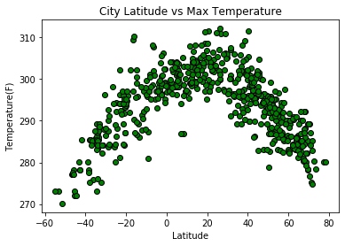
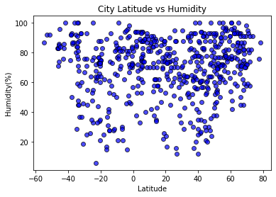
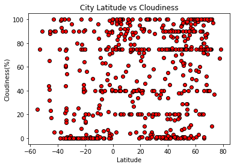
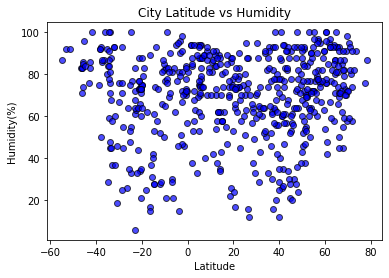
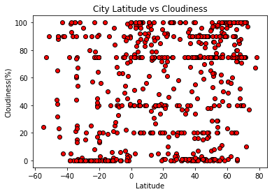

Latitude vs. Wind Speed

The further a city is from the equator, the more likely it is to be colder. The highest temperatures seem to be found from 20°-40° latitude
Visualizations



The further a city is from the equator, the more likely it is to be colder. The highest temperatures seem to be found from 20°-40° latitude

